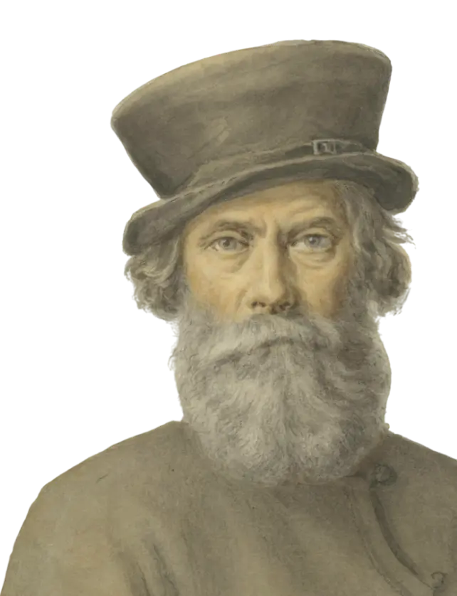
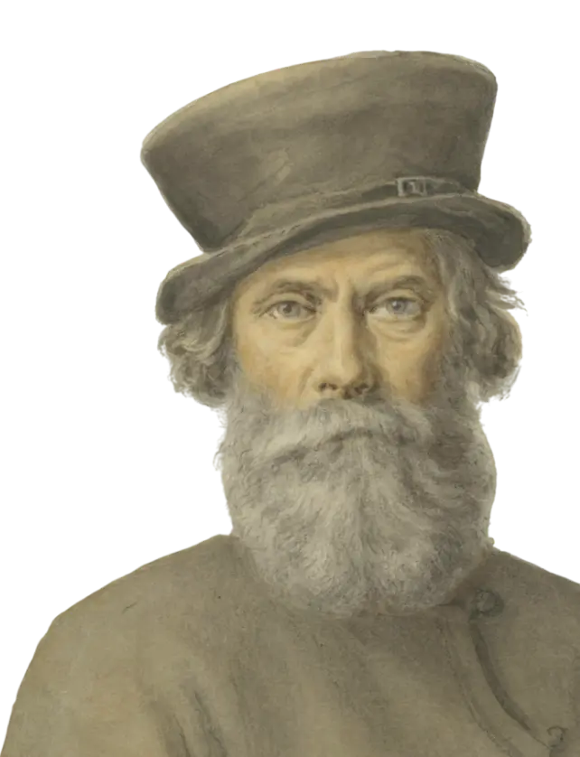

Обширная географія
В некоторых регионах существует проблема отсутствия метрических книг, хранившихся в 1918-1945гг в ЗАГСах
– книг за период 1860-1917гг. Одним из массовых источников, который иногда позволяет преодолеть эту
трудность, является фонд Крестьянского поземельного банка (КПБ), в котором содержатся, в том числе,
списки заемщиков.
Банк существовал с середины 1880х годов и предоставлял ссуды, в основном, бывшим помещичьим крестьянам
для осуществления выкупных платежей за землю (это не единственная категория заемщиков, занимали и
другие, например, другие категории крестьян, мещане, дворяне из мелкопоместной шляхты). Фонды хранятся
как в РГИА, так и региональных архивах (сохранность везде разная, но, если фонд сохранился в
региональном архиве, то вероятность найти именно посемейные списки в нем выше, чем в РГИА).
Исходя из опыта обработки более 20000 документов, в 90% дел ф.592 РГИА представлены только списки
заемщиков (глав хозяйств), менее, чем в 1% дел — посемейные списки, и в остальных 9% — вообще никаких
списков. Но на моих глазах даже эти списки заемщиков позволяли в некоторых случаях продвинуться в
исследовании на одно поколение.
Кроме списков, в некоторых типах анкет из этих дел встречаются характеристики заемщиков и упоминание
причин, побудивших их покупать землю, встречаются и прошения отдельных крестьян (даже в групповых
делах). Подробнее о генеалогических и биографических сведениях, которые можно найти в этом фонде,
читайте в отдельной статье.
В РГИА хорошая сохранность дел КПБ большинства губерний, но есть существенная проблема — описи слепые, и
систематизированы только по уездам. Поэтому работа с делами возможна только после оцифровки уезда
целиком. К счастью, фонд полностью микрофильмирован, микрофильмы можно свободно фотографировать. На
микрофильм помещается, в среднем, от 4 до 8 дел, а один уезд включает в себя, в среднем, от 70 до 600
дел. И значит, оцифровка вполне возможна (под оцифровкой понимается фотосъемка с экрана проектора для
микрофильмов).
|
Акмолинская область, 29 дел |
Кокчетавский - 4 дела (оп.4 дд.1-4) (спонсоры: Юлия Ф.; оцифровка: Дмитрий Кривошей)
Омский - 10 дел (оп.4 дд.5-14) (оцифровка: Дмитрий Кривошей) Петропавловский - 15 дел(оп.4 дд.15-29) (спонсоры: Ирина С., Мария Максутова, Сергей Калиганов, Юрий А.) Дела оцифрованы полностью |
В ЦГА РК и ИАОО фондов Крестьянского поземельного банка нет |
|
Акмолинская область, 29 дел |
Кокчетавский - 4 дела (оп.4 дд.1-4) (спонсоры: Юлия Ф.; оцифровка: Дмитрий Кривошей)
Омский - 10 дел (оп.4 дд.5-14) (оцифровка: Дмитрий Кривошей) Петропавловский - 15 дел(оп.4 дд.15-29) (спонсоры: Ирина С., Мария Максутова, Сергей Калиганов, Юрий А.) Дела оцифрованы полностью |
В ЦГА РК и ИАОО фондов Крестьянского поземельного банка нет |
|
Акмолинская область, 29 дел |
Кокчетавский - 4 дела (оп.4 дд.1-4) (спонсоры: Юлия Ф.; оцифровка: Дмитрий Кривошей)
Омский - 10 дел (оп.4 дд.5-14) (оцифровка: Дмитрий Кривошей) Петропавловский - 15 дел(оп.4 дд.15-29) (спонсоры: Ирина С., Мария Максутова, Сергей Калиганов, Юрий А.) Дела оцифрованы полностью |
В ЦГА РК и ИАОО фондов Крестьянского поземельного банка нет |


 
